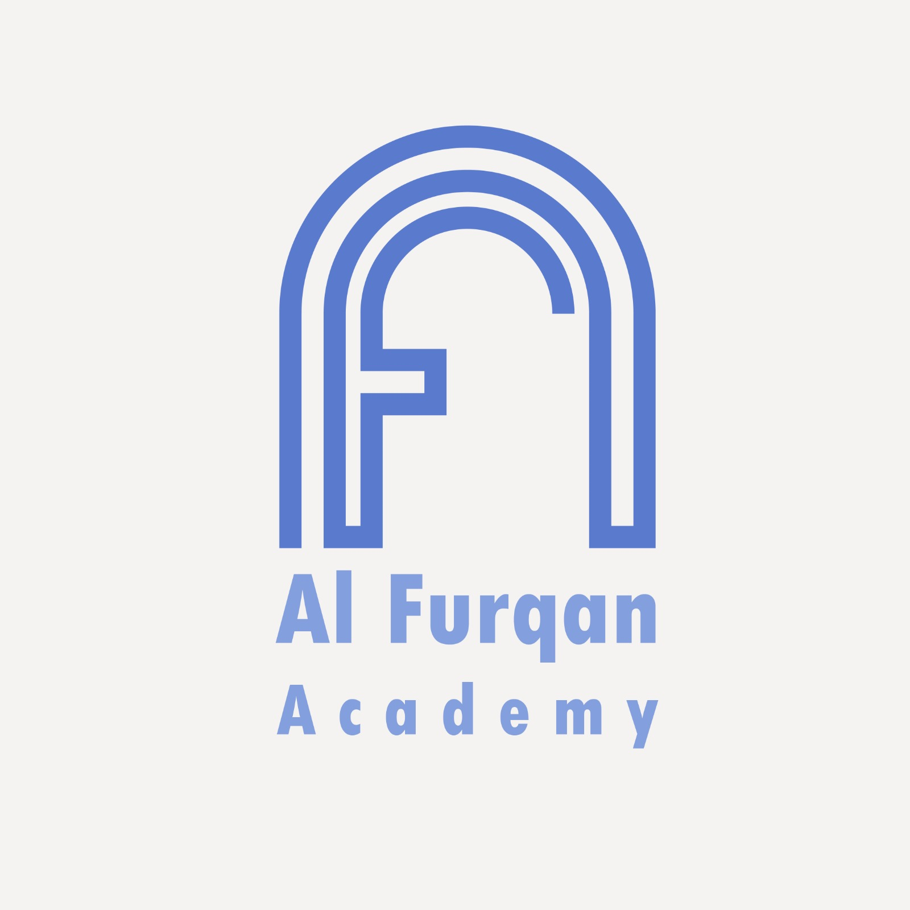

تعليم القرآن والتجويد للأطفال والكبار أونلاين مع أفضل المدرسين
أكاديمية الفرقان هي منصة تعليمية رائدة متخصصة في تعليم القرآن الكريم والتجويد واللغة العربية عن بُعد. نخدم طلاب الجاليات المسلمة في أوروبا وأمريكا والخليج العربي. نتميز بأساليب تعليمية حديثة، مع نخبة من المدرسين المؤهلين من الأزهر الشريف، حيث نقدم تجربة تعليمية تفاعلية وممتعة تناسب جميع الأعمار.
فريق تدريس مؤهل من خريجي الأزهر الشريف ذوي الخبرة في التعليم عن بعد
اختر المواعيد المناسبة لك حسب توقيت بلدك مع إمكانية تغيير الحصص
دروس فردية أو مجموعات صغيرة لا تزيد عن 5 طلاب لضمان الجودة
جرب دروسنا مع حصة تجريبية مجانية دون أي التزامات مالية
مدرس متخصص في التجويد والقراءات، لديه 15 سنة خبرة في تدريس القرآن الكريم للكبار والأطفال.
متخصصة في تعليم الأطفال القرآن الكريم بطريقة تفاعلية وجذابة، خبرة 10 سنوات في التعليم عن بعد.
مدرس متخصص في تحفيظ القرآن الكريم وتصحيح التلاوة، خبرة 12 سنة في تدريس الجاليات المسلمة.
تعلم أساسيات القراءة الصحيحة، أحكام التجويد البسيطة، وحفظ قصار السور
تحسين التلاوة، تعلم أحكام التجويد المتقدمة، وحفظ أجزاء من القرآن
إتقان التجويد، دراسة القراءات، ومشروع ختم القرآن الكريم
مراجعة الحفظ، ضبط المتون، والإجازة بالسند المتصل
شاهد هذا الفيديو للتعرف أكثر على منهجية التدريس وبيئة التعلم في أكاديمية الفرقان
جاري إرسال البيانات...
مدة الدرس 30 دقيقة للأطفال و45 دقيقة للكبار. يمكن تمديد المدة حسب رغبة الطالب والاتفاق مع المدرس.
نعم، نقدم شهادات إتمام معتمدة من الأكاديمية بعد اجتياز كل مستوى من مستويات التعليم.
نقبل الدفع عبر البطاقات الائتمانية، باي بال، والتحويلات البنكية. كما نوفر خيارات دفع متعددة حسب الدولة.
نعم، يمكنك طلب تغيير المدرس في أي وقت دون أي رسوم إضافية.